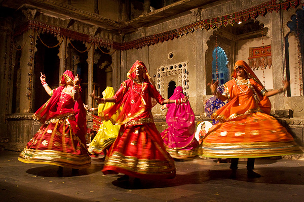
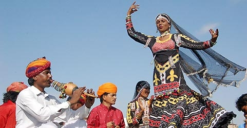
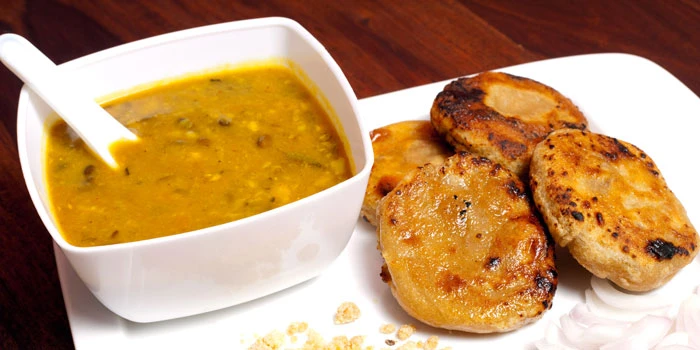
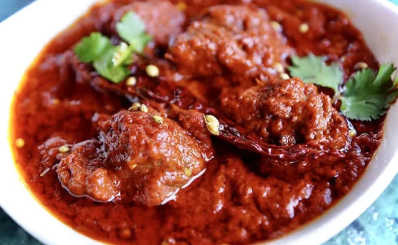
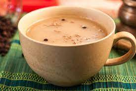
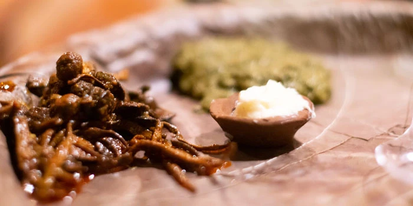
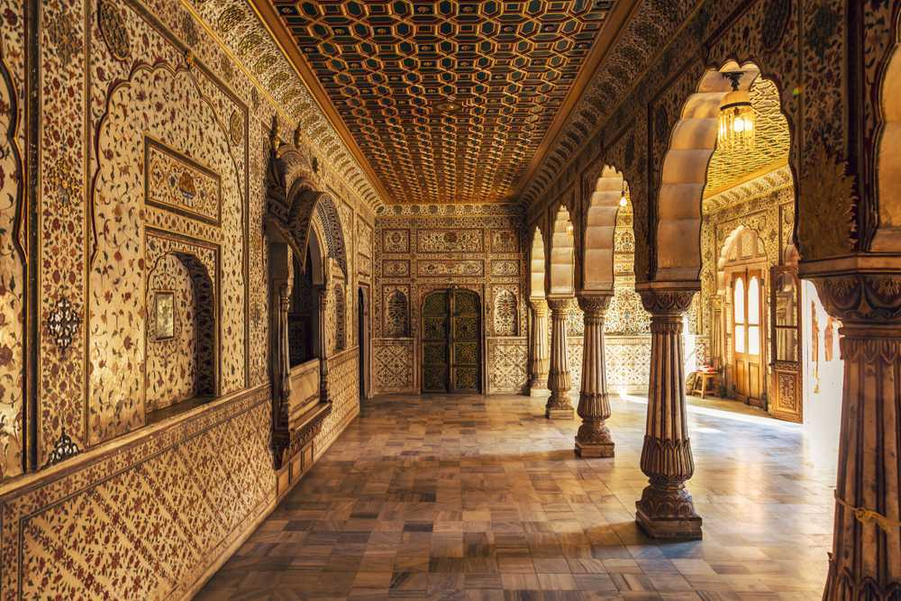

The state of Rajasthan in northwestern India includes part of the Thar Desert, as well as Ranthambhor National Park, home to wild tigers, and verdant Mount Abu and its elaborate temples. A camel safari near the inhabited desert trading centre of Jaisalmer gives a hint of the area's beautiful desolation. Udaipur's lakefront setting provides rich contrasts. The capital, Jaipur, is a shopper's dream.
Folk Dance
Ghoomar
Ghoomar is probably the most popular folk dance in India. This dance form was introduced by the Bhil tribe, and later adopted by the royal communities of Rajasthan, including Rajputs. It is performed by women on special events and festivals, such as the arrival of a newlywed bride at her marital house, Holi and Teej.
Kalbeliya
Considered by UNESCO as Intangible Heritage, Kalbeliya is performed by the women of the namesake tribe. Women deck up in traditional costume, which is angrakhi (a jacket-like garment), odhani (veil) and black swirling ghagra (long skirt), and dance sensuously and sinuously to the music played by the men using traditional instruments, such as dholak (two-headed hand drum), khanjari (percussion instrument) and pungi (a woodwind instrument). The dance movements are mostly serpent-like, hence it is also referred as ‘Snake Charmer dance’ or ‘Sapera dance’.
Bhavai
Bhavai is Rajasthan’s ritualistic dance, which is usually performed by women belonging to Kalbelia, Jat, Meena, Bhil or Kumhar tribal communities of the state. The dance involves women balancing eight to nine brass pitchers or earthen pots on their head as they dance and twirl with their feet on the perimeter of a brass plate or on the top of a glass. The dance is accompanied by male performers singing and playing instruments, such as harmonium, sarangi and dholak.

Dress
Traditional Dress for Women
The conventional attire that the women of Rajasthan wear comprises the long exuberant skirt called Ghagra. The top garment is called Choli or Kurti. Along with this, they also cover their head or drape around their shoulders the long, light fabric called Odani.
Traditional Dress for Men
The customary attire for the Rajasthani man is the Dhoti, Angarkha, Kurta, and Pyjama. The Dhoti, prevalent across most Indian states, is a long, white cloth, usually of cotton, draped around the waist and tucked between the legs. The Angarkha is a robe-like garment worn along with Dhoti, generally by men of affluent social status. Tribal communities have adapted the attire into their traditional costume, reserving it for festivities and occasions. The Rajput clan wears the long, ankle-length Angarkha.

Cuisine
Dal Baati Churma
This is the state's classic signature dish. Baati is hard, unleavened bread cooked in the desert areas of Rajasthan. Baati is prized mainly for its long shelf life, plus it requires hardly any water for its preparation. It is always eaten with dal (lentil curry). The dal is made of lentils while churma is a coarsely ground wheat mixture crushed and cooked in ghee and jaggery or sugar.
Laal maans
In this predominantly vegetarian state, the most famous non-vegetarian dish is laal maans. Laal maans literally means ‘red meat’ and the dish got its name because of its red color. Traditionally, laal maans used to be made with wild boar or deer. Today, it consists of marinated spicy mutton curry cooked on a low heat in a fiery sauce of red chillies, garlic paste, sliced onions and curds.
Raab
This is a thick broth made from millet (bajra) flour and buttermilk, which is heated and fermented. Bajra flour and buttermilk are put in an earthen pot and mixed to make a thick sauce. This is then left to simmer over a low flame for several hours until fully cooked. It is then eaten, usually as a soup. A variant is 'makki ki raab', or corn raab, in which boiled corn kernels are added.
Ker sangri
One of the most popular Rajasthani dishes, ker is a wild berry that is tangy and peppery while sangri is a type of long bean grown abundantly in the desert areas of Jaisalmer and Barmer. Sangri is a mainstay during drought, when little else is available as it is 53% protein. Legend has it that long ago there was a famine in Rajasthan and the villagers found these two vegetables when all other vegetation had withered away. The villagers took these vegetables home and due to the scarcity of water cooked them in vegetable oil with spices.
Tourism
Jaipur
Also called the Pink City, Jaipur is the capital of the royal state of Rajasthan. Along with Delhi and Agra, Jaipur forms the Golden Triangle and hails as one of the most famous tourist circuits in the country.
Udaipur
Udaipur, also known as the City of Lakes, is one of the most visited tourist places in Rajasthan. Located around stunning water lakes and enveloped by the Aravalli Hills in all directions, Udaipur is known for its azure lakes, magnificent palaces, vibrant culture and delectable food. Along with being a must-visit destination, it is also one of the best places to experience luxury in India.

Jaisalmer
Jaisalmer is a prominent tourist spot located in the northwestern state of Rajasthan in India. It is known as the 'golden city' due to its golden dunes and castles clad in golden honey sandstone. Jaisalmer is adorned with lakes, ornate Jain temples and havelis

Jodhpur
Jodhpur is the second-largest city in Rajasthan and the former capital of the Marwar region. It is popularly called "the Blue City" as it looks completely blue from an aerial view because of its blue walls and houses. Jodhpur is primarily famous for its temples, lakes and snacks, with the magnificent Mehrangarh Fort being the main attraction.

Bikaner
Located in the midst of Thar Desert, Bikaner is a "cultural paradise and a traveller's haven". Bikaner with its magnificence in architecture, art and culture is filled with colour, festivity and cultural marvels.The city will mesmerize you with the camels sauntering the beautiful sand dunes, its ancient palaces and forts.
